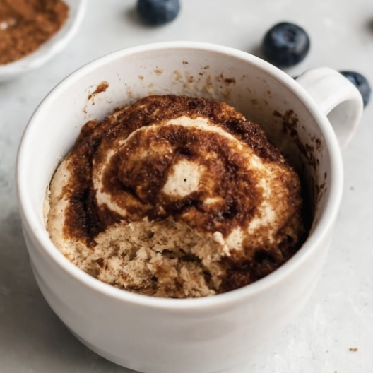

Rol de Canela en vaso
Ingredientes:
- 2 cdas de harina de avena
- 3 cdas de yogurt griego s/a
- 1 cda de azúcar mascabado
- 2 cdas de canela en polvo
- 2 sobres de endúlzate
Instrucciones:
- Con tus manos mezcla la harina de avena con 2 cdas de yogurt griego, endulzante y 1 cda de canela,
hasta formar una masa
- Extiende la masa a lo largo, espolvorea con el azúcar mascabado y enrolla
- Agrégalo en la taza y calienta por 2-3 en microondas
- Retira, deja enfriar y agrega por encima la otra cda de yogurt griego y canela en polvo